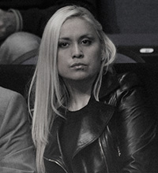
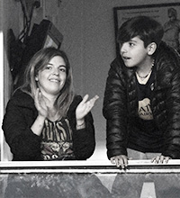
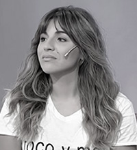
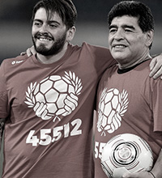
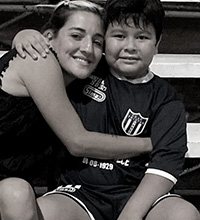
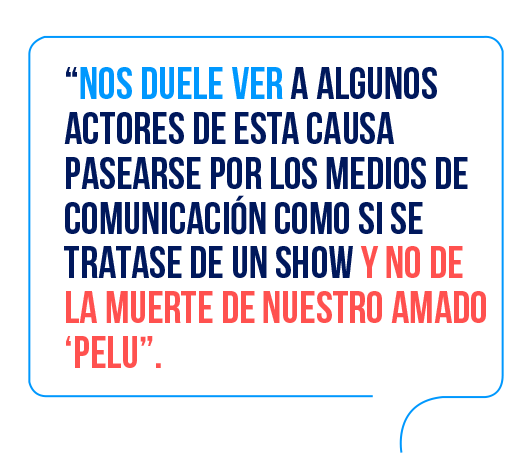
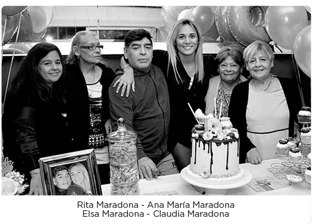

una investigación que sigue su curso

Parejas
Claudia Villafane
Ha criticado seriamente el actuar del equipo médico del ‘10’. “No se murió, lo mataron”.
Cristiana Sinagra
Se ha encargado, enfáticamente, de defender que Diego Jr. Es hijo de Maradona, tras señalamientos del abogado Matías Morla.
Valeria Sabalain
Hasta la fecha, no se ha conocido declaración de ella sobre Diego Maradona.

Veronica Ojeda
Ha defendido siempre la herencia de ‘Dieguito’, su hijo, y ha atacado a las hermanas de Maradona al médico Leopoldo Luque.
Cubana ( 1 )
pareja sin confirmar
pareja sin confirmar
Cubana ( 2 )
pareja sin confirmar
pareja sin confirmar
Sus hijos, los cinco herederos de su fortuna

Dalma
(hija de Villafañe)
Con regularidad sube imágenes con su padre. Declaró en contra del médico Leopoldo Luque y el abogado Matías Morla.

Gianinna
(hija de Villafañe)
Al igual que su hermana, es emotiva al recordar a su padre. Ha atacado de frente a Matías Morla.

Diego Jr
(hijo de Sinagra)
Han dudado que sea hijo de Maradona. Ha enfrentado al médico Leopoldo Luque y el abogado Matías Morla. Fue señalado de impedir prueba de ADN de una supuesta hija de Diego, llamada Eugenia Laprovíttola.
Jana
(hija de Sabalain)
No sale mucho en redes hablar de su padre fallecido.

Diego Fernando
(hijo de Ojeda)
El hijo menor. Tiene contacto con Gianinna y Jana. esta última le preguntó recientemente: “¿Por qué se murió papá?”.
Hijo cubano 1
Hijo sin confirmar
Hijo cubano 2
Hijo sin confirmar
Hijo cubano 3
Hijo sin confirmar


Críticas de sus hermanas
